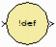

|
|
The output of the Xilinx Indeterminate Probe indicates whether the input data is indeterminate (MATLAB value NaN). An indeterminate data value corresponds to a VHDL indeterminate logic data value of 'X'.The probe accepts any Xilinx signal as input and produces a double signal as output. Indeterminate data on the probe input will result in an assertion of the output signal indicated by a value one. Otherwise, the probe output is zero.